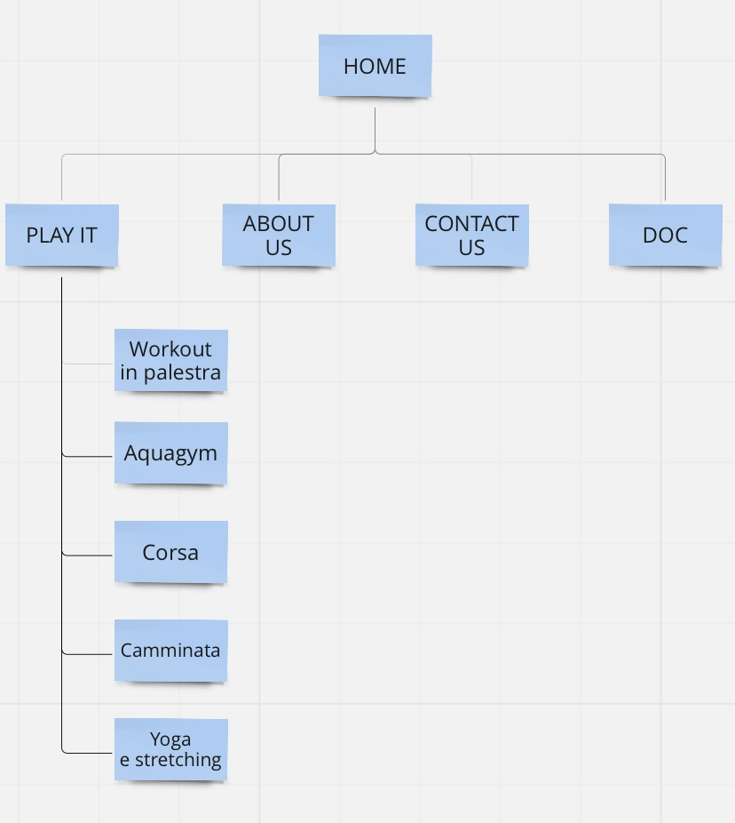
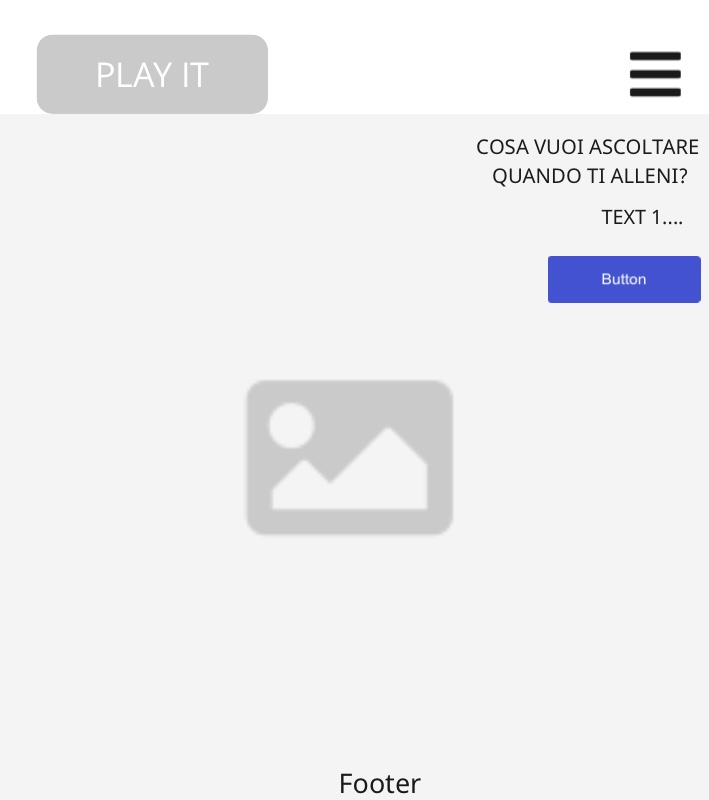
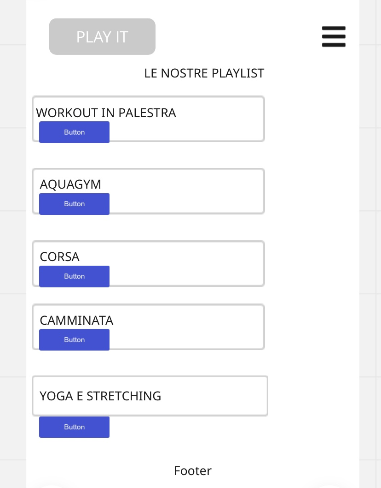
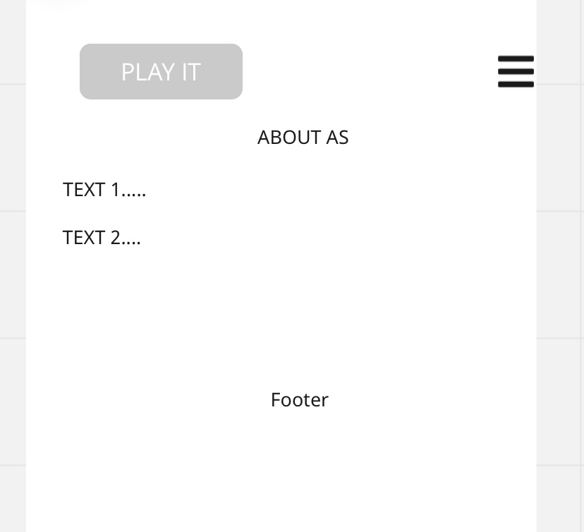
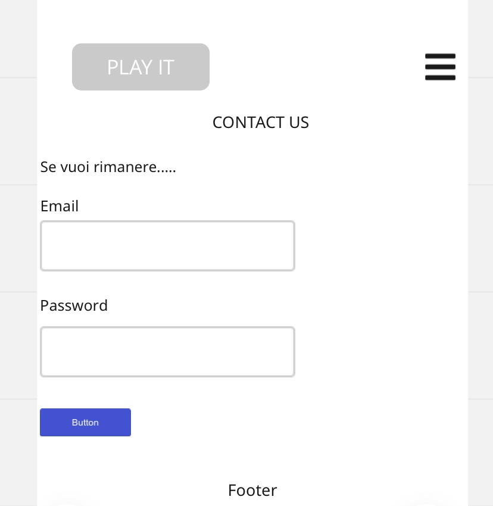
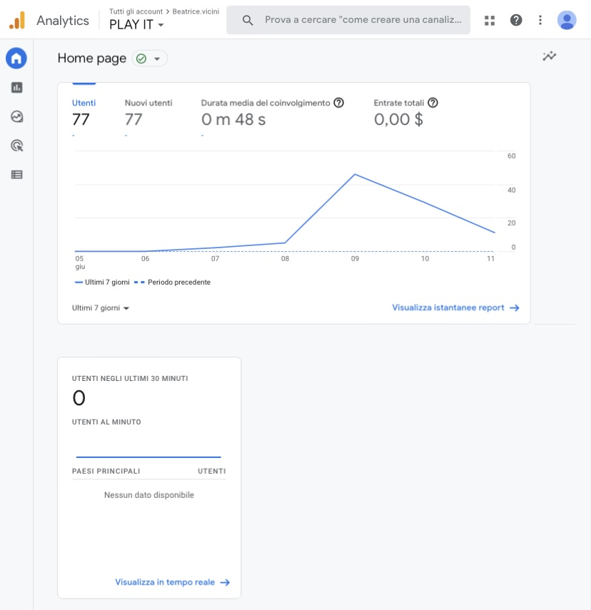
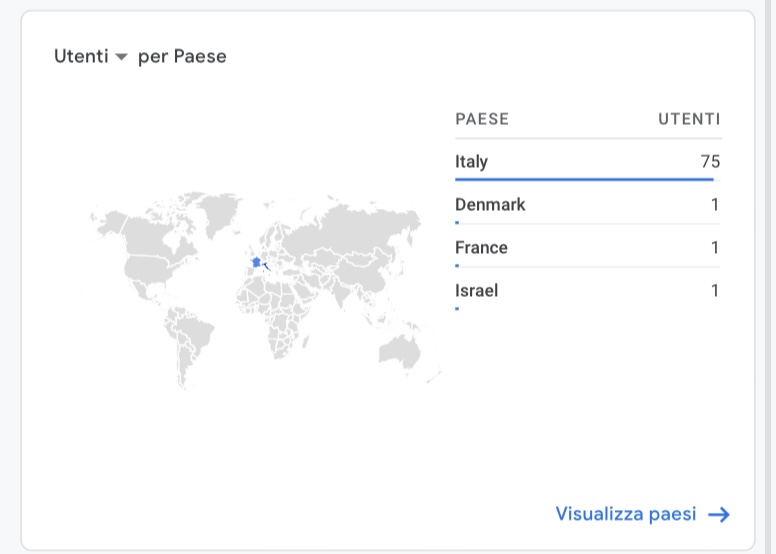
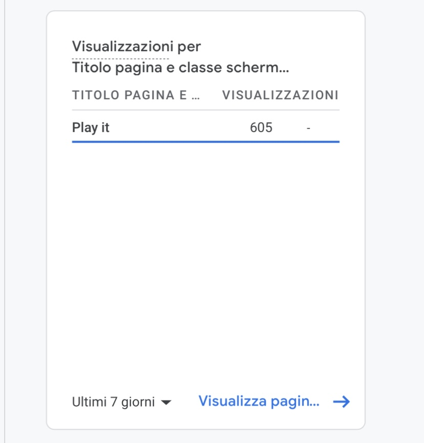

ABSTRACT
Play it è un sito che fornisce una selezione di playlist da abbinare durante la propria attività fisica. Sono presenti playlist per varie tipologie di allenamento e attività, senza tralasciare il momento dedicato al relax. Con un’interfaccia molto semplice, è accessibile ad ogni persona che voglia avere un sottofondo musicale durante i propri allenamenti.
PROJECT MANAGMENT PLAN
1. BENCHMARKING
OBIETTIVI
L’obiettivo di Play it è quello di fornire all’utente una playlist diversa per ogni occasione di allenamento. L’utente ha così la possibilità di scegliere le canzoni e il mood che più si adatta al tipo di attività che andrà a svolgere.
TARGET
L’audience che questo sito va a coprire è in realtà molto ampia. Se ci pensiamo infatti, ognuno di noi fa un tipo di attività, che sia uno sport individuale o una semplice camminata in compagnia. Anche a livello di età non ci sono grandi limiti; certamente però coprirà maggiormente un pubblico giovane.
COMPETITORS
I competitors principali sono tutti quei siti che mettono a disposizione delle playlist in base al “mood” e di conseguenza anche alle attività che una persona svolge durante la giornata.
Sicuramente tra questi vi è Spotify, ma anche YouTube che oltre a ciò fornisce video di allenamenti con già la musica di accompagnamento o sottofondo.
2. STRUTTURA E LAYOUT
ARCHITETTURA DEL SITO

WIREFRAME
HOMEPAGE

PLAY IT

ABOUT US

CONTACT US

LOOK AND FEEL
Per quanto riguarda il font ho deciso di utilizzare Montserrat per i titoli (sans serif) in modo tale da fornire una continuità a tutte le pagine e mantenere lo stesso stile.
Per i colori di base ho mantenuto il nero per titoli e body in tutto il sito e il "blueviolet" per i buttons e il nome del sito nella navbar.
Solo nella pagina delle playlist, ho voluto assegnare ad ogni playlist un colore per diversificarle.
3. LINGUAGGI E STRUMENTI
Il sito è stato realizzato interamente utilizzando i linguaggi HTML e CSS. Come editor text ho utilizzato Sublime, Bootstrap per migliorare la responsivness, il menu di navigazione, i buttons e qualche altro accorgimento riferito al footer e alla pagina delle playlist. Inoltre W3schools per consigli relativi ad HTML e infine Google per scaricare l’immagine con licenze Creative Commons.
COMMUNICATION STRATEGY
1. BACKGROUND
Play it con la sua interfaccia molto intuitiva permette all’utente di spostarsi sulle varie pagine del sito in modo molto rapido senza particolare difficoltà. Questo appunto permette una vasta accessibilità ad ogni tipo di utente. Inoltre con l’iscrizione vi è la possibilità di rimanere sempre aggiornati e contribuire alla creazione delle playlist.
Il tutto gratuitamente a differenza di un competitor come ad esempio Spotify che fa pagare l'abbonamento.
2. OBIETTIVI COMUNICATIVI
L’obiettivo principale del sito è quello di suggerire agli utenti l’ascolto di musica durante la propria attività sportiva o di relax, anche in condivisione con altri.
L'interazione attraverso l'iscrizione è poi un modo per rimanere sempre in contatto con i potenziali utenti e fidelizzarli.
Come obiettivo qualitativo ho deciso di provare a raggiungere almeno 40 nuovi utenti e 100 visualizzazioni al mio sito web.
3. TARGET AUDIENCE E MESSAGGI
Come già descritto in precedenza il target è abbastanza ampio.
Sebbene sia forse più indicato per persone che svolgono attività fisica, non è escluso che le playlist possano essere ascoltate anche in altri momenti o situazioni: può anche essere infatti un modo per scoprire nuove canzoni o nuovi artisti.
Solitamente questo target viene raggiunto attraverso l’utilizzo di social network, in particolare Instagram.
4. PROMOZIONE
Per promuovere il mio sito ho utilizzato Whatsapp e in parte anche Telegram inviando il link a conoscenti che a loro volta attraverso il passaparola lo hanno mandato ad altri.
5. VALUTAZIONE DEI RISULTATI
Come si evince dai grafici, i nuovi utenti sono 77 e le visualizzazioni ad oggi 605.
 
